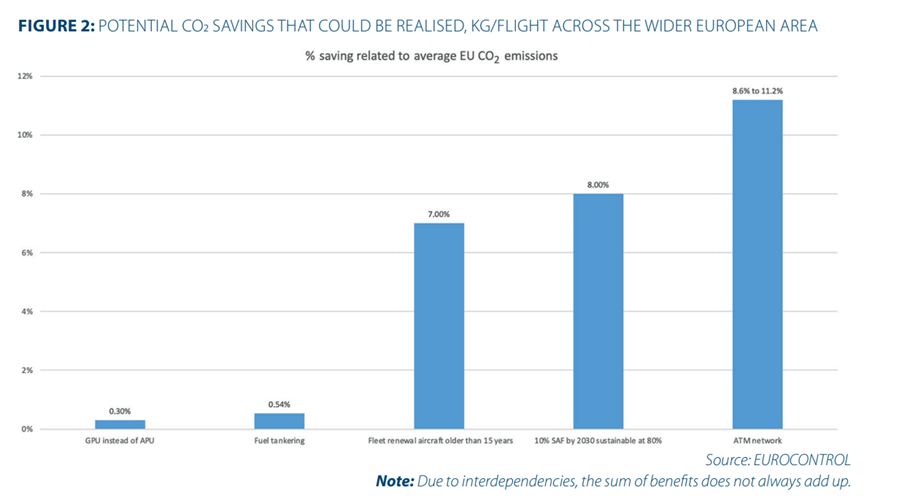
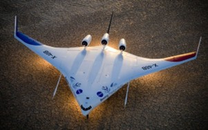

Veroudering
Hoe vliegtuigveroudering de CO2-uitstoot beïnvloedt en wat we kunnen doen
🌍 De impact van verouderde vliegtuigen
Verouderde vliegtuigen stoten meer CO2 uit dan moderne. Door vlootvernieuwing op 15 jaar oude toestellen toe te passen, kan de luchtvaartsector een CO2-reductie van ongeveer 7 procent behalen.
De reductie van 7% lijkt op het eerste gezicht misschien klein. Echter niets is minder waar; de luchtvaartsector groeit pijlsnel, zo'n vijf procent per jaar en is momenteel verantwoordelijk voor 2 tot 3 procent van de wereldwijde CO2-emissies.

2-besparingen per vlucht" loading="lazy" />🔍 Factoren die CO2-uitstoot beïnvloeden
Er zijn tal van factoren die een invloed hebben op de uitgestoten hoeveelheid koolstofdioxide door de vliegtuigindustrie: opstijgtijd, ouderdom, gewicht, afstand en het type brandstof. Ook de bezettingsgraad en het type vliegtuig bepalen mee de CO2-uitstoot per persoon van een bepaalde vlucht.
⏱️ Vluchtduur
Lange vluchten verbruiken meer brandstof, maar efficiënter per kilometer
📅 Ouderdom
Oudere toestellen hebben hogere brandstofconsumptie door slijtage
⚖️ Gewicht
Zwaardere vliegtuigen verbruiken meer brandstof voor dezelfde afstand
🛢️ Brandstoftype
moderne brandstoffen kunnen efficiënter zijn dan traditionele kerosine
📊 De impact van vlootleeftijd
De ouderdom van een vloot heeft een doorslaggevende impact op de totale emissies. Dit komt voornamelijk door de volgende factoren:
Klik om te ontdekken hoe motorefficiëntie afneemt met veroudering...
Verouderde motoren stoten meer CO₂ uit als gevolg van natuurlijke slijtage en degradatie. Het is essentieel om deze factor mee te wegen, omdat de totale emissies van een toestel anders systematisch worden onderschat.
Hoewel motoren gedurende hun levensduur regelmatig worden onderhouden of gereviseerd, treedt er tussen de onderhoudsintervallen door onvermijdelijk rendementsverlies op. Hoewel upgrades naar modernere systemen mogelijk zijn, wordt dit niet op elk toestel toegepast, waardoor de technologische achterstand van oudere motoren de uitstoot onnodig hoog houdt.
Klik om te zien hoe nieuwe generaties efficiënter zijn...
In de factsheet van Parlement en Wetenschap wordt bevestigd dat elke nieuwe vliegtuiggeneratie gemiddeld 15-20 procent energiezuiniger is dan hun voorganger. Dit betekent dat de technologische achterstand van oudere toestellen direct leidt tot een aanzienlijk hogere uitstoot.
Hoewel de transitie naar duurzamere alternatieven cruciaal is, blijft de grootschalige realisatie hiervan complex vanwege technische en economische barrières.
Klik om de toekomst van vliegtuigontwerp te ontdekken...
Iedereen weet wel wat de vorm van een vliegtuig is: romp en vleugels. Maar is dit de meest brandstofefficiënte vorm? Er wordt nagedacht over een andere constructie in moderne vliegtuigen, de "Blended Wing Body".
Dit model zou minder luchtweerstand ervaren en dus minder brandstof verbruiken dan traditionele vliegtuigontwerpen.
Klik om te zien hoe gewicht toeneemt met de tijd...
Vliegtuigen ondervinden een gewichtstoename. Zo zorgen reparaties, vervangstukken en extra verflagen voor een verhoging van het gewicht.
🚀 De toekomst van vliegtuigontwerp
Een van de meest veelbelovende innovaties in de luchtvaart is de "Blended Wing Body" (BWB) concept. Dit revolutionaire ontwerp combineert de vleugels en romp in één naadloze structuur, wat resulteert in significant minder luchtweerstand en tot 20% brandstofbesparing vergeleken met traditionele vliegtuigen.
Hoewel het concept nog in de experimentele fase is, tonen windtunneltests en simulaties aan dat BWB-vliegtuigen niet alleen efficiënter zijn, maar ook stiller en meer stabiel tijdens de vlucht.

📚 Bronnen
EUROCONTROL. (2021, April 2021). Think Paper #10 - Flying the 'perfect green flight. Opgeroepen op Maart 31, 2026, van https://www.eurocontrol.int/publication/eurocontrol-think-paper-10-flying-perfect-green-flight
Factors Affecting the Rate of Fuel Consumption in Aircrafts. (2021, Juli 2021). Opgeroepen op Maart 31, 2026, van https://www.mdpi.com/2071-1050/13/14/8066
Jarry, G., Dalmau, R., Very, P., & Sun, J. (2025, September 19). Aircraft Fuel Flow Modelling with Ageing Effects: From Parametric Corrections to Neural Networks. Opgeroepen op Maart 31, 2026, van https://arxiv.org/pdf/2509.15736v1
Kurus, N., & Takahashi, T. (2021, Januari 4). Does Your Aircraft's Metabolism Slow with Time? An Analysis of Flight Performance Degradation Associated with Aging Aircraft. Opgeroepen op Maart 31, 2026, van https://arc.aiaa.org/doi/abs/10.2514/6.2021-0460
Peeters, P., & Melkert, J. (2024, Maart 26). FACTSHEET TOEKOMST VERDUURZAMING LUCHTVAART (ACTUALISATIE 2024). Opgeroepen op Maart 31, 2026, van https://parlementenwetenschap.nl/wp-content/uploads/2024/04/240328_Factsheet_Toekomst_verduurzaming_luchtvaart_-update-2024.pdf
Smith, R. (2007, Juli 31). Of Blended Wing-Bodies and Flying Wings. Opgeroepen op Maart 31, 2026, van https://www.symscape.com/blog/blended-wing-bodies-flying-wings
Staples, M. (2018, Maart). Aviation CO2 emissions reductions from the use of alternative jet fuels. Opgeroepen op Maart 31, 2026, van https://www.sciencedirect.com/science/article/pii/S0301421517308224?casa_token=nzuGBRjTVSAAAAAA:f8f8ckABCly1jN77PwJ-nHMEi-QFkL_nufJ2Iv6A0f6KAJIfjt5hHL9lEjiABLBIJkSeUSbtog